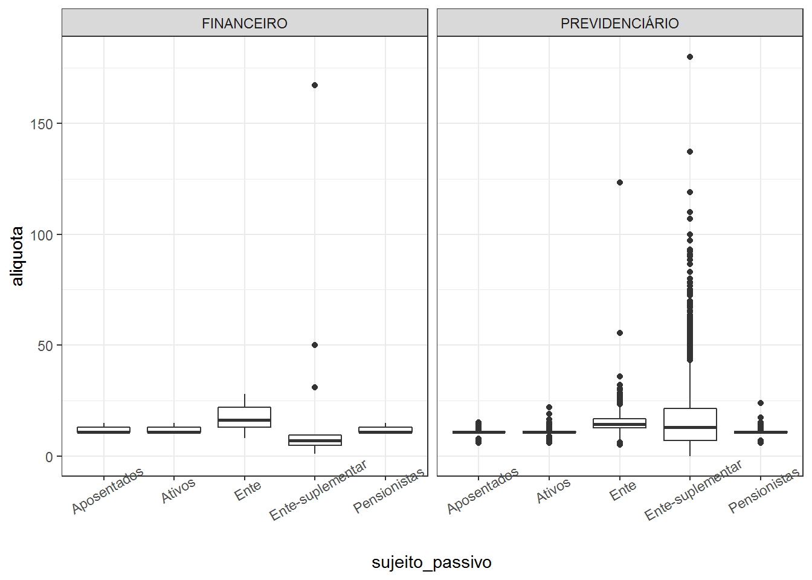

Capítulo 2 Alíquotas de Contribuição Praticadas
Neste capítulo, objetiva-se explorar o conjunto de dados contendo informações sobre as alíquotas de contribuição previdenciária praticadas pelos RPPS.
Para que a análise dos dados seja possível é necessário realizar a importação dos mesmos:
aliquotas <- read_excel("dados/1-aliquota_atualizacao_de_ago_set_2020_extracao_em_2020-10-06t18_11_46.xlsx")Feita a importação é sempre recomendável inspecionar os dados para verificar se tudo ocorreu bem. Uma forma de se fazer isso é mostrar os registros iniciais da base de dados.
head(aliquotas) %>%
kbl(caption="Registros iniciais do conjunto de dados") %>%
kable_paper(full_width = FALSE) %>%
scroll_box(width = "700px", height = "300px")| CNPJ | Ente | UF | Plano de Segregação | Sujeito Passivo | Aliquota | Início de Vigência | Fim de Vigência | Observação |
|---|---|---|---|---|---|---|---|---|
| 63606479000124 | Governo do Estado do Acre | AC | PREVIDENCIÁRIO | Ativos | 14 | 2017-07-01 | NA | NA |
| 63606479000124 | Governo do Estado do Acre | AC | PREVIDENCIÁRIO | Aposentados | 14 | 2017-07-01 | NA | NA |
| 63606479000124 | Governo do Estado do Acre | AC | PREVIDENCIÁRIO | Pensionistas | 14 | 2017-07-01 | NA | NA |
| 63606479000124 | Governo do Estado do Acre | AC | PREVIDENCIÁRIO | Ente | 22 | 2019-12-04 | 2020-02-29 | NA |
| 63606479000124 | Governo do Estado do Acre | AC | PREVIDENCIÁRIO | Ente | 14 | 2020-03-01 | NA | NA |
| 04034583000122 | Rio Branco | AC | FINANCEIRO | Aposentados | 11 | 2013-01-01 | 2020-10-31 | Reanalisando: o art. 56 da Lei 1793/2009-publicada em 31/12/2009-segregou a massa estabelecendo: - I.Fundo Financeiro – FFIN: abrange todos os benefícios previdenciários de aposentadorias e pensões/II.Fundo Previdenciário – FPREV: abrange todos os demais servidores públicos efetivos vinculados ao RPPS.O art. 51 fixando a alíquota m 11%. |
Examinando o conjunto de dados, verifica-se que o mesmo possui nove colunas. Também aqui os nomes das mesmas dão uma boa indicação do conteúdo de cada uma.
Basicamente a base de dados informa o percentual da alíquota de contribuição praticada em cada RPPS, indicando na variável Sujeito Passivo se a alíquota se refere aos servidores ativos, aos aposentados, aos pensionistas, ao Ente e também se é alíquota suplementar, situação em que a variável Sujeito Passivo assume o valor Ente-suplementar.
A base de dados também indica o início e o término de vigência da alíquota e se a mesma refere-se ao plano financeiro ou ao plano previdenciário.
É possível verificar os valores assumidos pela variável Sujeito Passivo da seguinte forma:
[1] "Ativos" "Aposentados" "Pensionistas" "Ente"
[5] "Ente-suplementar"Para facilitar o trabalho posterior com o conjunto de dados, será feita a modificação dos nomes das variáveis, conforme mostrado no código a seguir:
# Renomeia as colunas
aliquotas <- aliquotas %>%
rename(cnpj_ente = CNPJ,
ente = Ente,
uf = UF,
plano_segregacao = `Plano de Segregação`,
sujeito_passivo = `Sujeito Passivo`,
aliquota = Aliquota,
inic_vigencia = `Início de Vigência`,
fim_vigencia = `Fim de Vigência`)
# Ajuste no tipo de dados das datas de início e de vigência
# e exclusão da coluna "Observação"
aliquotas <- aliquotas %>%
mutate(inic_vigencia = as.Date(inic_vigencia),
fim_vigencia = as.Date(fim_vigencia)) %>%
select(-Observação)
# Exibe os 3 primeiros registros do conjunto de dados
head(aliquotas, 3) %>%
kbl(caption="Registros iniciais do conjunto de dados") %>%
kable_paper(full_width = FALSE) %>%
scroll_box(width = "700px", height = "300px")| cnpj_ente | ente | uf | plano_segregacao | sujeito_passivo | aliquota | inic_vigencia | fim_vigencia |
|---|---|---|---|---|---|---|---|
| 63606479000124 | Governo do Estado do Acre | AC | PREVIDENCIÁRIO | Ativos | 14 | 2017-07-01 | NA |
| 63606479000124 | Governo do Estado do Acre | AC | PREVIDENCIÁRIO | Aposentados | 14 | 2017-07-01 | NA |
| 63606479000124 | Governo do Estado do Acre | AC | PREVIDENCIÁRIO | Pensionistas | 14 | 2017-07-01 | NA |
2.1 Análise Exploratória
Uma coisa que deve ser feita logo de início, ao se começar a análise de um conjunto de dados, é verificar se existe alguma inconsistência nos valores das variáveis; e nesse conjunto de dados em particular, é importante examinar se as alíquotas não apresentam valores inconsistentes.
Essa verificação pode ser feita realizando-se, por exemplo, um resumo estatístico dos valores das alíquotas. Antes, contudo, é conveniente observar se a base de dados contém alíquotas recentes.
Min. 1st Qu. Median Mean 3rd Qu. Max.
"2020-01-01" "2020-08-31" "2020-12-31" "2023-01-24" "2022-12-31" "2058-12-31"
NA's
"9648" A base de dados não contém alíquotas cuja validade tenha encerrado em anos anteriores a 2020. O resumo dos valores das alíquotas pode ser feito da seguinte forma:
Min. 1st Qu. Median Mean 3rd Qu. Max.
0.01 11.00 11.00 13.38 14.00 180.00 Os valores mínimo e máximo não parecem razoáveis. No código a seguir será feita a identiticação dos RPPS com as alíquotas nesses valores:
# A tibble: 1 x 8
cnpj_ente ente uf plano_segregacao sujeito_passivo aliquota inic_vigencia
<chr> <chr> <chr> <chr> <chr> <dbl> <date>
1 01612686~ Caci~ PB PREVIDENCIÁRIO Ente-suplement~ 0.01 2020-01-01
# ... with 1 more variable: fim_vigencia <date># A tibble: 1 x 8
cnpj_ente ente uf plano_segregacao sujeito_passivo aliquota inic_vigencia
<chr> <chr> <chr> <chr> <chr> <dbl> <date>
1 01217538~ Trin~ GO PREVIDENCIÁRIO Ente-suplement~ 180 2044-01-01
# ... with 1 more variable: fim_vigencia <date>Existe a necessidade de examinar com mais profundidade se estes valores de fato estão corretos, ou se houve erro no preenchimento dos dados.
Essa mesma verificação que foi feita para o conjunto de dados como um todo, pode ser feita considerando-se os valores de uma variável qualitativa, . Exemplo:
aliquotas %>%
group_by(sujeito_passivo) %>%
summarise(aliq_min = min(aliquota),
aliq_max = max(aliquota)) %>%
kbl() %>%
kable_paper(full_width = FALSE) | sujeito_passivo | aliq_min | aliq_max |
|---|---|---|
| Aposentados | 6.00 | 15.30 |
| Ativos | 6.00 | 22.00 |
| Ente | 5.15 | 123.25 |
| Ente-suplementar | 0.01 | 180.00 |
| Pensionistas | 6.00 | 24.02 |
O resultado mostra os valores máximo e mínimo das alíquotas por valores da variável sujeito_passivo.
Uma análise gráfica também pode revelar coisas interessantes. O código a seguir produz um boxplot das alíquotas por sujeito passivo, separados por plano:
ggplot(aliquotas, aes(x = sujeito_passivo, y = aliquota)) +
facet_wrap(~ plano_segregacao) +
geom_boxplot() +
theme_bw() +
theme(axis.text.x = element_text(angle = 30))
O gráfico mostra algumas coisas interessantes: a primeira são os valores altos que se verificam para algumas alíquotas. No plano previdenciário existem alíquotas suplementares em valores superiores a 100%.
Outra coisa é ver que no fundo em repartição existem alguns RPPS com alíquota suplementar, o que é estranho já que nesse regime financeiro não há deficit atuarial a ser amortizado.
As alíquotas do ente no plano em repartição tendem a ser maiores que as alíquotas do ente no plano em capitalização.
Ativos, aposentados e pensionistas tendem a ter alíquotas iguais nos dois planos.
A base de dados parece ter muitas inconsistências, o que é preocupante visto que é uma base de dados essencial para o cálculo das contribuições devidas ao RPPS.
2.2 RPPS com Segregação de Massas
Uma questão que é possível responder com essa base de dados é: quantos RPPS possuem segregação de massas e quanto isso representa do total de RPPS?
Uma outra questão é: qual unidade da federação possui o maior percentual de RPPS com segregação de massas?
Sabe-se que o instituto da segregação de massas é adotado pelo RPPS como uma forma de equacionamento do deficit atuarial. Assim, se um RPPS possui segregação de massas pode-se concluir que é deficitário ainda que o fundo em capitalização seja superavitário.
No que segue buscar-se-á as repostas para as questões acima “interrogando” a base de dados.
O primeiro passo será criar uma nova coluna na base de dados para identificar os RPPS com segregação de massas:
cnpj_ente_segregacao <- aliquotas %>%
filter(plano_segregacao == "FINANCEIRO") %>%
pull(cnpj_ente) %>%
unique()Os comandos acima identificam os CNPJ dos Entes que possuem RPPS com segregação de massas. O próximo passo é criar a nova coluna, que terá o valor 1 se o RPPS possui segregação e 0 caso contário.
# Cria nova coluna "possui_segregacao"
aliquotas <- aliquotas %>%
mutate(possui_segregacao = ifelse(cnpj_ente %in% cnpj_ente_segregacao, 1, 0))
# Exibe os 10 primeiros registros
aliquotas %>%
select(ente, plano_segregacao, possui_segregacao) %>%
head(10) %>%
kbl() %>%
kable_paper(full_width = FALSE)| ente | plano_segregacao | possui_segregacao |
|---|---|---|
| Governo do Estado do Acre | PREVIDENCIÁRIO | 0 |
| Governo do Estado do Acre | PREVIDENCIÁRIO | 0 |
| Governo do Estado do Acre | PREVIDENCIÁRIO | 0 |
| Governo do Estado do Acre | PREVIDENCIÁRIO | 0 |
| Governo do Estado do Acre | PREVIDENCIÁRIO | 0 |
| Rio Branco | FINANCEIRO | 1 |
| Rio Branco | FINANCEIRO | 1 |
| Rio Branco | FINANCEIRO | 1 |
| Rio Branco | FINANCEIRO | 1 |
| Rio Branco | PREVIDENCIÁRIO | 1 |
Agora é possível responder a questão 1: quantos RPPS possuem segregação de massas e quanto isso representa do total de RPPS?
rpps_segregado <- aliquotas %>%
select(cnpj_ente, possui_segregacao) %>%
distinct(cnpj_ente, .keep_all = TRUE) [1] 2147
0 1
1894 253
0 1
0.8821612 0.1178388 As saídas indicam que a base de dados contempla 2.147 RPPS, dos quais 253 possuem segregação de massa, o que representa 11,7% dos RPPS na base de dados e não da totalidade dos RPPS, visto que no Capítulo 1 ao se examinar a base de dados de cadastro de RPPS, ficou evidenciada a existência de 2.156 RPPS ativos e mais 21 em extinção.
Agora passa-se à segunda questão: qual unidade da federação possui o maior percentual de RPPS com segregação de massas?
rpps_segregado_uf <- aliquotas %>%
select(cnpj_ente, uf, possui_segregacao) %>%
distinct(cnpj_ente, .keep_all = TRUE) %>%
group_by(uf) %>%
summarise(com_sm = sum(possui_segregacao),
sem_sm = n() - com_sm,
n_rpps = com_sm + sem_sm,
`%_com_sm` = round(com_sm / n_rpps, 4),
`%_sem_sm` = round(sem_sm / n_rpps, 4)) %>%
arrange(desc(`%_com_sm`))
qflextable(rpps_segregado_uf)uf | com_sm | sem_sm | n_rpps | %_com_sm | %_sem_sm |
DF | 1 | 0 | 1 | 1,000 | 0,00 |
AC | 1 | 1 | 2 | 0,500 | 0,50 |
AP | 2 | 2 | 4 | 0,500 | 0,50 |
RR | 1 | 1 | 2 | 0,500 | 0,50 |
SE | 2 | 2 | 4 | 0,500 | 0,50 |
ES | 13 | 22 | 35 | 0,371 | 0,63 |
RJ | 26 | 54 | 80 | 0,325 | 0,68 |
PE | 46 | 103 | 149 | 0,309 | 0,69 |
CE | 13 | 51 | 64 | 0,203 | 0,80 |
PI | 13 | 56 | 69 | 0,188 | 0,81 |
SP | 32 | 190 | 222 | 0,144 | 0,86 |
SC | 10 | 60 | 70 | 0,143 | 0,86 |
PA | 4 | 25 | 29 | 0,138 | 0,86 |
PR | 21 | 157 | 178 | 0,118 | 0,88 |
MG | 23 | 197 | 220 | 0,104 | 0,90 |
PB | 6 | 65 | 71 | 0,085 | 0,92 |
AM | 2 | 25 | 27 | 0,074 | 0,93 |
RO | 2 | 28 | 30 | 0,067 | 0,93 |
TO | 2 | 28 | 30 | 0,067 | 0,93 |
MT | 6 | 101 | 107 | 0,056 | 0,94 |
AL | 4 | 70 | 74 | 0,054 | 0,95 |
RN | 2 | 39 | 41 | 0,049 | 0,95 |
GO | 8 | 163 | 171 | 0,047 | 0,95 |
RS | 11 | 321 | 332 | 0,033 | 0,97 |
BA | 1 | 36 | 37 | 0,027 | 0,97 |
MA | 1 | 46 | 47 | 0,021 | 0,98 |
MS | 0 | 51 | 51 | 0,000 | 1,00 |
2.3 Adequação das Alíquotas à EC 103/19
Com a promulgação da Emenda Constitucional no 103/19, os RPPS com deficit atuarial devem obrigatoriamente aumentar a alíquota de contribuição de seus servidores para 14%.
Existe para esses RPPS a possibilidade de estabelecer alíquotas progressivas, ou seja, percentuais diferentes por faixa salarial. Nesses casos é interessante o cálculo da alíquota efetiva, já que a mesma não pode resultar em percentual inferior a 14%.
Os poucos RPPS superavitários podem manter suas alíquotas no mesmo patamar desde que não sejam inferiores às alíquotas aplicáveis ao RGPS.
A questão que se pode colocar é: quais RPPS ainda não cumpriram o mandamento constitucional de aumentar suas alíquotas de contribução?
Pode-se identificar uma parcela desses RPPS simplesmente verificando se possuem segregação de massas. Em caso positivo, são deficitários e devem implementar a alteração de alíquotas de uma ou outra forma. Uma outra parcela pode ser identificada verificando se possui alíquota suplementar, indicativo de que o RPPS possui déficit atuarial em equacionamento.
Com essa sistemática ficariam de fora os RPPS deficitários que tenham optado por equacionar o deficit por aportes períodicos. Para a identificação desses RPPS será necessário trazer para análise a base de dados Valores_Compromissos que integra o conjunto de arquivos com dados do DRAA.
Os comandos a seguir servirão para identificar os RPPS deficitários, tomando por base apenas o arquivo de alíquotas.
Na seção anterior foram identificados os RPPS com segregação de massas. Agora será feita a identificação dos RPPS que possuem alíquota suplementar, outro indicador de RPPS deficitário.
O comando a seguir identifica os CNPJ dos Entes cujos RPPS possuem alíquota suplementar.
cnpj_ente_aliqsup <- aliquotas %>%
filter(sujeito_passivo == "Ente-suplementar") %>%
pull(cnpj_ente) %>%
unique()Agora será criada na base de dados uma nova coluna chamada possui_aliqsup que assumirá o valor 1 se o RPPS possui alíquota suplementar e o valor 0 caso contrário.
aliquotas <- aliquotas %>%
mutate(possui_aliqsup = ifelse(cnpj_ente %in% cnpj_ente_aliqsup, 1, 0))
aliquotas %>%
select(ente, plano_segregacao, possui_segregacao, possui_aliqsup) %>%
head(10) %>%
kbl() %>%
kable_paper(full_width = FALSE)| ente | plano_segregacao | possui_segregacao | possui_aliqsup |
|---|---|---|---|
| Governo do Estado do Acre | PREVIDENCIÁRIO | 0 | 0 |
| Governo do Estado do Acre | PREVIDENCIÁRIO | 0 | 0 |
| Governo do Estado do Acre | PREVIDENCIÁRIO | 0 | 0 |
| Governo do Estado do Acre | PREVIDENCIÁRIO | 0 | 0 |
| Governo do Estado do Acre | PREVIDENCIÁRIO | 0 | 0 |
| Rio Branco | FINANCEIRO | 1 | 1 |
| Rio Branco | FINANCEIRO | 1 | 1 |
| Rio Branco | FINANCEIRO | 1 | 1 |
| Rio Branco | FINANCEIRO | 1 | 1 |
| Rio Branco | PREVIDENCIÁRIO | 1 | 1 |
Agora será necessáro aplicar um filtro com o objetivo de pegar apenas os registros para os quais o RPPS possui segregação de massas ou alíquota suplementar.
Uma coisa interessante de se observar é que vários RPPS, apesar de possuirem segregação de massas, possuem também alíquota suplementar.
Deve-se fazer novamente a ressalva de que o conjunto de dados acima deixa de fora os RPPS deficitários que optaram por equacionar o deficit via aportes periódicos.
Agora que foram identificados parte dos RPPS que devem fazer o ajuste de alíquota, resta identificar quem ainda não fez.
O critério será olhar as alíquotas vigentes dos servidores ativos do plano previdenciário. O código a seguir realiza esse filtro:
ajuste <- rpps_ajuste_aliquota %>%
filter(sujeito_passivo == "Ativos",
plano_segregacao == "PREVIDENCIÁRIO",
is.na(fim_vigencia))Sempre é interessante checar para ver se existe RPPS em duplicidade na base:
[1] TRUESim. A identificação dos mesmos pode ser feita da seguinte forma:
dups <- ajuste$cnpj_ente[duplicated(ajuste$cnpj_ente)]
ajuste %>%
filter(cnpj_ente %in% dups) %>%
kbl() %>%
kable_paper(full_width = FALSE)| cnpj_ente | ente | uf | plano_segregacao | sujeito_passivo | aliquota | inic_vigencia | fim_vigencia | possui_segregacao | possui_aliqsup |
|---|---|---|---|---|---|---|---|---|---|
| 06314439000175 | Duque Bacelar | MA | PREVIDENCIÁRIO | Ativos | 11.00 | 2011-02-01 | NA | 0 | 1 |
| 06314439000175 | Duque Bacelar | MA | PREVIDENCIÁRIO | Ativos | 13.55 | 2018-06-01 | NA | 0 | 1 |
| 28920999000106 | Porciúncula | RJ | PREVIDENCIÁRIO | Ativos | 14.00 | 2020-08-01 | NA | 1 | 0 |
| 28920999000106 | Porciúncula | RJ | PREVIDENCIÁRIO | Ativos | 14.00 | 2020-08-01 | NA | 1 | 0 |
Como é possível verificar, há uma duplicidade (Porciúncula-RJ) e o não registro de um término de vigência (Duque Bacelar-MA).
Agora é possível olhar para um resumo dos valores das alíquotas nesse subconjunto dos dados:
Min. 1st Qu. Median Mean 3rd Qu. Max.
11.00 11.00 11.00 11.93 14.00 15.00 O comando a seguir irá mostrar quais valores de alíquotas são mais frequentes:
| aliquota | n |
|---|---|
| 11.00 | 990 |
| 14.00 | 429 |
| 12.00 | 9 |
| 13.00 | 7 |
| 12.50 | 3 |
| 13.50 | 2 |
| 14.25 | 2 |
| 11.50 | 1 |
| 11.75 | 1 |
| 11.80 | 1 |
| 12.20 | 1 |
| 12.22 | 1 |
| 12.33 | 1 |
| 12.80 | 1 |
| 12.82 | 1 |
| 13.21 | 1 |
| 13.55 | 1 |
| 15.00 | 1 |
Para identificar os RPPS que ainda não providenciaram a alteração da alíquota basta aplicar um filtro para obter os registros onde o valor da alíquota seja inferior a 14% e caso seja de interesse identificar esses RPPS por unidade da federação basta filtrar também por UF. O código a seguir mostra como fazer isso para o RJ:
ajuste %>%
filter(aliquota < 14, uf == "RJ") %>%
select(ente, uf, aliquota, inic_vigencia) %>%
arrange(inic_vigencia) %>%
kbl() %>%
kable_paper(full_width = FALSE)| ente | uf | aliquota | inic_vigencia |
|---|---|---|---|
| São José de Ubá | RJ | 11.0 | 2005-10-13 |
| Macaé | RJ | 11.0 | 2005-10-23 |
| Cantagalo | RJ | 11.0 | 2005-12-08 |
| Carmo | RJ | 11.0 | 2006-03-27 |
| Silva Jardim | RJ | 11.0 | 2006-04-30 |
| Itatiaia | RJ | 11.0 | 2006-05-05 |
| Teresópolis | RJ | 11.0 | 2006-11-23 |
| Cachoeiras de Macacu | RJ | 11.0 | 2007-01-12 |
| Campos dos Goytacazes | RJ | 11.0 | 2007-04-27 |
| Paraíba do Sul | RJ | 11.0 | 2009-03-12 |
| Laje do Muriaé | RJ | 11.0 | 2009-05-28 |
| Cardoso Moreira | RJ | 11.0 | 2010-01-01 |
| Areal | RJ | 11.0 | 2010-05-31 |
| Maricá | RJ | 11.0 | 2010-06-07 |
| Duas Barras | RJ | 11.0 | 2010-12-31 |
| Angra dos Reis | RJ | 11.0 | 2011-07-12 |
| Saquarema | RJ | 11.0 | 2012-03-30 |
| Mendes | RJ | 11.0 | 2012-06-06 |
| Aperibé | RJ | 11.0 | 2012-12-04 |
| Valença | RJ | 11.0 | 2012-12-27 |
| São Sebastião do Alto | RJ | 11.0 | 2013-06-29 |
| Volta Redonda | RJ | 11.0 | 2013-09-12 |
| Sapucaia | RJ | 11.0 | 2015-01-01 |
| Mesquita | RJ | 11.0 | 2015-06-04 |
| Barra Mansa | RJ | 11.0 | 2016-07-19 |
| Sumidouro | RJ | 11.0 | 2016-12-14 |
| Japeri | RJ | 11.0 | 2017-01-13 |
| Niterói | RJ | 12.5 | 2017-03-30 |
| Bom Jardim | RJ | 11.0 | 2017-09-15 |
| São João de Meriti | RJ | 11.0 | 2018-02-28 |
| Rio Claro | RJ | 11.0 | 2018-10-01 |
| Petrópolis | RJ | 11.0 | 2019-06-01 |
Como os RPPS que não constam da base de dados, bem como aqueles que optaram por equacionar o deficit via aportes pariódicos não são identificados pela metodologia descrita, faz sentido identificar os RPPS que fizerem o ajuste de alíquota, visto que se um RPPS não constar em nenhuma das listagens ou é superavitário ou optou por equacionar o deficit via aportes.
O código a seguir identifica os RPPS do RJ que já possuem as alíquotas ajustadas.
ajuste %>%
filter(aliquota >= 14, uf == "RJ") %>%
select(ente, uf, aliquota, inic_vigencia) %>%
arrange(inic_vigencia) %>%
qflextable() ente | uf | aliquota | inic_vigencia |
Governo do Estado do Rio de Janeiro | RJ | 14 | 2017-08-28 |
Duque de Caxias | RJ | 14 | 2017-11-14 |
Rio das Ostras | RJ | 14 | 2018-03-01 |
Natividade | RJ | 14 | 2020-07-01 |
Pinheiral | RJ | 14 | 2020-07-15 |
Porciúncula | RJ | 14 | 2020-08-01 |
Porciúncula | RJ | 14 | 2020-08-01 |
Quatis | RJ | 14 | 2020-10-01 |
2.4 Alíquota do Ente Inferior à do Servidor Ativo
Uma outra verificação possível de ser feita é se existe algum Ente cuja alíquota de contribuição para o RPPS seja inferior a do servidor ativo ( Lei 9717, art. 2o, caput ).
Para essa análise serão selecionados apenas os registros relativos às alíquotas do Ente e dos servidores ativos do plano previdenciário que estejam em vigor. O código a seguir faz esse filtro:
aliq_ente_ativos_prev <- aliquotas %>%
filter(sujeito_passivo %in% c("Ente", "Ativos"),
plano_segregacao == "PREVIDENCIÁRIO",
is.na(fim_vigencia)) No conjunto de dados obtido foi observado que existem alguns RPPS para os quais existem mais de uma alíquota em vigor para o Ente ou para o servidor Ativo.
O código abaixo faz a identificação do CNPJ do Ente cujo RPPS apresenta essa inconsistência com vistas a excluí-los da base de dados para que sejam, posterioremnte, objeto de análise à parte.
rpps_inconsistente <- aliq_ente_ativos_prev %>%
group_by(cnpj_ente) %>%
summarise(qtd_linhas = length(cnpj_ente)) %>%
filter(qtd_linhas > 2) %>%
pull(cnpj_ente) %>%
unique()Os RPPS “com problemas” são os seguintes:
cnpj_ente | ente | uf | plano_segregacao | sujeito_passivo | aliquota | inic_vigencia | fim_vigencia | possui_segregacao | possui_aliqsup |
04271037000105 | Barcelos | AM | PREVIDENCIÁRIO | Ente | 11,0 | 2006-06-26 | 0 | 0 | |
04271037000105 | Barcelos | AM | PREVIDENCIÁRIO | Ativos | 8,0 | 2009-02-01 | 0 | 0 | |
04271037000105 | Barcelos | AM | PREVIDENCIÁRIO | Ativos | 9,0 | 2009-02-01 | 0 | 0 | |
04271037000105 | Barcelos | AM | PREVIDENCIÁRIO | Ativos | 11,0 | 2009-02-01 | 0 | 0 | |
14043574000151 | Feira de Santana | BA | PREVIDENCIÁRIO | Ativos | 14,0 | 2020-09-01 | 0 | 1 | |
14043574000151 | Feira de Santana | BA | PREVIDENCIÁRIO | Ente | 14,0 | 2020-09-01 | 0 | 1 | |
14043574000151 | Feira de Santana | BA | PREVIDENCIÁRIO | Ente | 14,0 | 2020-09-01 | 0 | 1 | |
16444150000124 | Ourolândia | BA | PREVIDENCIÁRIO | Ente | 14,0 | 2018-01-04 | 0 | 0 | |
16444150000124 | Ourolândia | BA | PREVIDENCIÁRIO | Ativos | 7,5 | 2020-07-01 | 0 | 0 | |
16444150000124 | Ourolândia | BA | PREVIDENCIÁRIO | Ativos | 9,0 | 2020-07-01 | 0 | 0 | |
16444150000124 | Ourolândia | BA | PREVIDENCIÁRIO | Ativos | 12,0 | 2020-07-01 | 0 | 0 | |
16444150000124 | Ourolândia | BA | PREVIDENCIÁRIO | Ativos | 14,0 | 2020-07-01 | 0 | 0 | |
16444150000124 | Ourolândia | BA | PREVIDENCIÁRIO | Ativos | 14,5 | 2020-07-01 | 0 | 0 | |
16444150000124 | Ourolândia | BA | PREVIDENCIÁRIO | Ativos | 16,5 | 2020-07-01 | 0 | 0 | |
16444150000124 | Ourolândia | BA | PREVIDENCIÁRIO | Ativos | 19,0 | 2020-07-01 | 0 | 0 | |
16444150000124 | Ourolândia | BA | PREVIDENCIÁRIO | Ativos | 22,0 | 2020-07-01 | 0 | 0 | |
04219688000156 | Conquista d'Oeste | MT | PREVIDENCIÁRIO | Ente | 14,0 | 2020-08-01 | 0 | 0 | |
04219688000156 | Conquista d'Oeste | MT | PREVIDENCIÁRIO | Ativos | 11,0 | 2020-08-01 | 0 | 0 | |
04219688000156 | Conquista d'Oeste | MT | PREVIDENCIÁRIO | Ativos | 13,0 | 2020-08-01 | 0 | 0 | |
04219688000156 | Conquista d'Oeste | MT | PREVIDENCIÁRIO | Ativos | 12,0 | 2020-08-01 | 0 | 0 | |
04219688000156 | Conquista d'Oeste | MT | PREVIDENCIÁRIO | Ativos | 14,0 | 2020-08-01 | 0 | 0 | |
28920999000106 | Porciúncula | RJ | PREVIDENCIÁRIO | Ente | 14,8 | 2017-09-01 | 1 | 0 | |
28920999000106 | Porciúncula | RJ | PREVIDENCIÁRIO | Ativos | 14,0 | 2020-08-01 | 1 | 0 | |
28920999000106 | Porciúncula | RJ | PREVIDENCIÁRIO | Ativos | 14,0 | 2020-08-01 | 1 | 0 |
Esses RPPS serão excluídos da base para que não comprometam a análise:
# Exclusão dos RPPS inconsistentes
aliq_ente_ativos_prev <- aliq_ente_ativos_prev %>%
filter(!(cnpj_ente %in% rpps_inconsistente)) %>%
select(cnpj_ente, ente, uf, sujeito_passivo, aliquota) Feita a exclusão, já é possível identificar os Entes cujas alíquotas são inferiores às alíquotas dos servidores:
# Modificação do formato da base e identificação dos registros onde
# a alíquota do Ente é inferior a do servidor ativo
aliq_ente_ativos_prev <- aliq_ente_ativos_prev %>%
pivot_wider(names_from = sujeito_passivo,
values_from = aliquota, values_fn = max) %>%
mutate(dif_taxa = Ente - Ativos) %>%
filter(dif_taxa < 0)Foram identificados 90 RPPS para os quais, em princípio, a alíquota de contribuição do Ente é inferior à alíquota cobrada dos servidor ativo. Estes RPPS estão listados na tabela a seguir:
ente | uf | Ativos | Ente | dif_taxa |
Atalaia | AL | 14 | 11,0 | -3,00 |
Branquinha | AL | 11 | 9,3 | -1,66 |
Cajueiro | AL | 11 | 8,1 | -2,88 |
Canapi | AL | 11 | 5,2 | -5,85 |
Jundiá | AL | 14 | 11,0 | -3,00 |
Monteirópolis | AL | 11 | 7,6 | -3,36 |
Palmeira dos Índios | AL | 14 | 11,6 | -2,39 |
Penedo | AL | 11 | 9,2 | -1,85 |
Tanque d'Arca | AL | 11 | 8,6 | -2,37 |
Taquarana | AL | 11 | 7,4 | -3,57 |
Serra Dourada | BA | 11 | 5,8 | -5,20 |
Aparecida de Goiânia | GO | 11 | 9,5 | -1,50 |
Campo Alegre de Goiás | GO | 14 | 11,5 | -2,50 |
Edéia | GO | 14 | 13,0 | -1,00 |
Gameleira de Goiás | GO | 11 | 10,1 | -0,92 |
Inhumas | GO | 14 | 11,5 | -2,47 |
Leopoldo de Bulhões | GO | 14 | 13,6 | -0,41 |
Mutunópolis | GO | 11 | 7,9 | -3,10 |
Quirinópolis | GO | 14 | 12,4 | -1,80 |
São Patrício | GO | 11 | 9,3 | -1,74 |
Senador Canedo | GO | 14 | 11,5 | -2,47 |
Chapadinha | MA | 11 | 5,4 | -5,64 |
Pedreiras | MA | 11 | 6,0 | -5,00 |
São Mateus do Maranhão | MA | 11 | 11,0 | -0,04 |
Vitória do Mearim | MA | 11 | 9,7 | -1,27 |
Coimbra | MG | 14 | 11,8 | -2,17 |
Felisburgo | MG | 11 | 10,0 | -1,00 |
Senhora do Porto | MG | 14 | 11,0 | -3,00 |
Rochedo | MS | 14 | 12,0 | -2,00 |
Acorizal | MT | 11 | 7,8 | -3,20 |
Água Boa | MT | 14 | 13,0 | -0,97 |
Alto Araguaia | MT | 14 | 6,2 | -7,83 |
Araguaiana | MT | 14 | 8,2 | -5,84 |
Aripuanã | MT | 14 | 11,1 | -2,91 |
Barra do Bugres | MT | 14 | 10,4 | -3,60 |
Castanheira | MT | 14 | 13,6 | -0,43 |
Colniza | MT | 14 | 13,6 | -0,45 |
Curvelândia | MT | 14 | 11,9 | -2,11 |
Figueirópolis d'Oeste | MT | 14 | 6,5 | -7,49 |
Gaúcha do Norte | MT | 14 | 13,6 | -0,42 |
Glória d'Oeste | MT | 14 | 7,1 | -6,94 |
Guarantã do Norte | MT | 14 | 12,2 | -1,78 |
Itiquira | MT | 14 | 7,6 | -6,40 |
Jaciara | MT | 14 | 12,8 | -1,17 |
Jauru | MT | 14 | 8,8 | -5,21 |
Juína | MT | 14 | 11,3 | -2,70 |
Juruena | MT | 14 | 8,0 | -6,02 |
Mirassol d'Oeste | MT | 14 | 13,0 | -0,98 |
Nova Canaã do Norte | MT | 14 | 12,7 | -1,31 |
Nova Lacerda | MT | 14 | 11,9 | -2,12 |
Nova Marilândia | MT | 14 | 6,2 | -7,81 |
Nova Olímpia | MT | 14 | 10,4 | -3,64 |
Nova Santa Helena | MT | 14 | 6,2 | -7,81 |
Novo Horizonte do Norte | MT | 14 | 7,5 | -6,52 |
Ponte Branca | MT | 11 | 9,4 | -1,63 |
Pontes e Lacerda | MT | 14 | 6,4 | -7,56 |
Porto Estrela | MT | 14 | 9,9 | -4,10 |
Reserva do Cabaçal | MT | 14 | 9,5 | -4,49 |
Santo Afonso | MT | 14 | 6,2 | -7,80 |
São Félix do Araguaia | MT | 14 | 7,9 | -6,11 |
Tabaporã | MT | 14 | 7,6 | -6,38 |
Terra Nova do Norte | MT | 14 | 7,2 | -6,76 |
Vila Rica | MT | 14 | 8,2 | -5,78 |
Curralinho | PA | 15 | 7,6 | -7,65 |
Dom Eliseu | PA | 11 | 9,5 | -1,54 |
Oeiras do Pará | PA | 11 | 7,3 | -3,69 |
Rurópolis | PA | 11 | 9,5 | -1,48 |
Soure | PA | 11 | 10,8 | -0,15 |
Lagoa Seca | PB | 14 | 13,8 | -0,21 |
Santa Helena | PB | 11 | 8,5 | -2,54 |
Água Preta | PE | 11 | 9,8 | -1,18 |
Águas Belas | PE | 14 | 11,0 | -3,00 |
Altinho | PE | 14 | 12,8 | -1,20 |
Angelim | PE | 11 | 10,8 | -0,18 |
Jupi | PE | 11 | 10,2 | -0,80 |
Petrolina | PE | 14 | 11,0 | -3,00 |
Francisco Santos | PI | 14 | 11,0 | -3,00 |
Jaboti | PR | 14 | 13,0 | -1,00 |
Natividade | RJ | 14 | 12,1 | -1,95 |
Boa Saúde (antigo Januário Cicco) | RN | 11 | 5,7 | -5,30 |
Coronel João Pessoa | RN | 11 | 8,7 | -2,28 |
Goianinha | RN | 11 | 10,4 | -0,62 |
São Tomé | RN | 14 | 13,0 | -1,00 |
Barra do Rio Azul | RS | 14 | 13,8 | -0,18 |
Nova Pádua | RS | 14 | 11,0 | -3,00 |
Porto Vera Cruz | RS | 14 | 12,0 | -2,00 |
Navegantes | SC | 14 | 11,4 | -2,62 |
Ilha das Flores | SE | 11 | 6,7 | -4,29 |
Sumaré | SP | 11 | 9,5 | -1,51 |
Couto de Magalhães | TO | 11 | 10,1 | -0,88 |